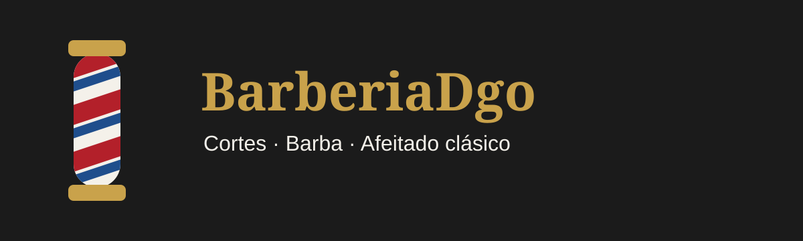

En BarberiaDgo ofrecemos cortes de cabello modernos y clásicos, arreglo y perfilado de barba, y afeitado tradicional con toalla caliente. Nuestros barberos cuidan cada detalle para que salgas luciendo y sintiéndote mejor.
¡Visítanos y agenda tu cita hoy mismo! Descubre por qué somos la barbería favorita de Durango.
Agenda tu cita
¿Por qué elegir BarberiaDgo?
Sabemos que tu tiempo y tu imagen son importantes. Por eso combinamos barberos con experiencia, productos de calidad y un ambiente cómodo para que cada visita valga la pena.
- Citas sin esperas Agenda tu horario y te atendemos a tiempo.
- Barberos expertos Dominamos cortes clásicos, fades y diseños modernos.
- Precios accesibles Calidad profesional a un precio justo.
- Higiene garantizada Herramientas desinfectadas en cada servicio.
Contacto
Dirección: Av. 20 de Noviembre #123, Centro, Durango, Dgo.
Teléfono: (618) 555-0123
Correo: contacto@barberiadgo.com
Horario: Lunes a sábado, 10:00 a 20:00 hrs
Redes sociales: @BarberiaDgo